← ก่อนหน้า
สไลด์ 1 / 13
ถัดไป →
ชุดเต็ม
🖥️ เต็มจอ
🖨️ พิมพ์ / บันทึก PDF
สไลด์ปก (Cover Page) หน้า 1 / 27
โปรเจกต์ “Pawtal (พอลทัล)”
ระบบเว็บแอปพลิเคชันค้นหาและตรวจจับสัตว์เลี้ยงหาย 5 ชนิดด้วยภาพถ่ายและ AI
สมาชิกผู้จัดทำและหน้าที่ความรับผิดชอบ หน้า 2 / 27
สมาชิกผู้จัดทำโครงงาน และหน้าที่รับผิดชอบ
คนที่ 1 · Full-Stack & UX Tools
ชนิกานต์ ขันทอง
รหัส 66053250
พัฒนา Backend API (server.mjs), ฐานข้อมูล SQLite WAL และ Media Storage
เชื่อมระบบดึงประกาศ 12 เว็บสาธารณะ + กลุ่ม Facebook และเชื่อมโซเชียลข้ามแอป IG/X/TikTok
พัฒนาหน้าเว็บ UX, ซูมเทียบจุดตำหนิ, สตูดิโอโปสเตอร์ QR (4:5 & A4) และระบบแจ้งเตือน
คนที่ 2 · AI Matching & OCR
ฟัยซล ขนาดผล
รหัส 66055363
พัฒนาระบบสกัดเวกเตอร์ภาพด้วย DINOv2 & pet-base และการครอปตัวสัตว์อัตโนมัติ
พัฒนาโมเดลจำแนกสายพันธุ์ (หมา–แมว–นก) และวิเคราะห์สี/ลายขน (coat-tagging.mjs)
จัดอันดับ Hybrid Ranking (ภาพ + ระยะทาง + เวลา) และระบบอ่านเบอร์/ป้าย Tesseract OCR
คนที่ 3 · AI Object Detection
พัชรินทร์ เอมโอด
รหัส 66012646
เตรียมชุดข้อมูลสัตว์เลี้ยง 5 ชนิด (สุนัข, แมว, นก, กระต่าย, แฮมสเตอร์) และกำหนด Label
ทำ Data Augmentation และเทรนโมเดล YOLO11n บน Google Colab (pets5.onnx)
พัฒนาระบบตรวจจับ 5 ชนิด & Pentagon Detection Zone (5 มุม) เช็ก IN / OUT (detect.html, zone.js)
ชื่อทีม __________ · หมายเลขกลุ่ม __________ · Section __________
แนะนำโปรเจกต์ & 5 ชนิดสัตว์เลี้ยง หน้า 3 / 27
ภาพรวม “Pawtal (พอลทัล)” และสัตว์เลี้ยง 5 ชนิดที่ระบบรองรับ
ประตูเชื่อมเบาะแสสัตว์เลี้ยง: เพียงอัปโหลดรูปน้อง 1–2 มุม ระบบ AI จะช่วยระบุชนิดสัตว์ แยกสายพันธุ์ (หมา–แมว 37 พันธุ์ · นก 24 สายพันธุ์ ) ตัดฉากหลัง และเทียบหาประกาศที่หน้าตาคล้ายกันจาก 12 เว็บไซต์สาธารณะ + 31 กลุ่ม Facebook ให้อัตโนมัติ
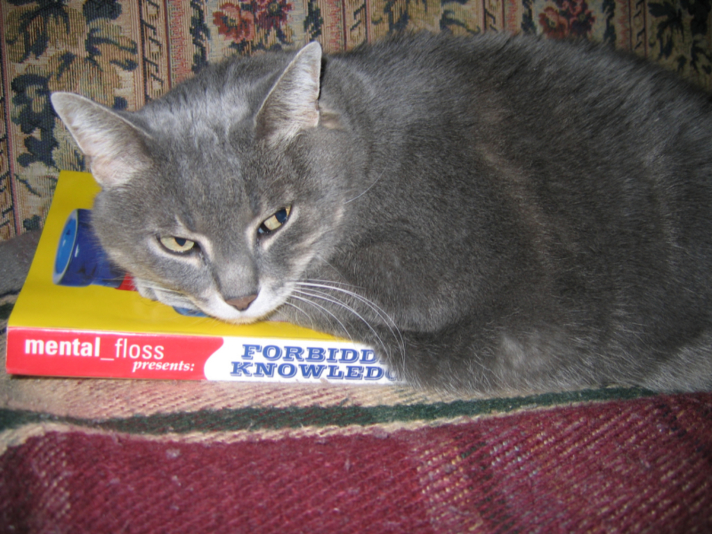
🐱 0: แมว (cat) 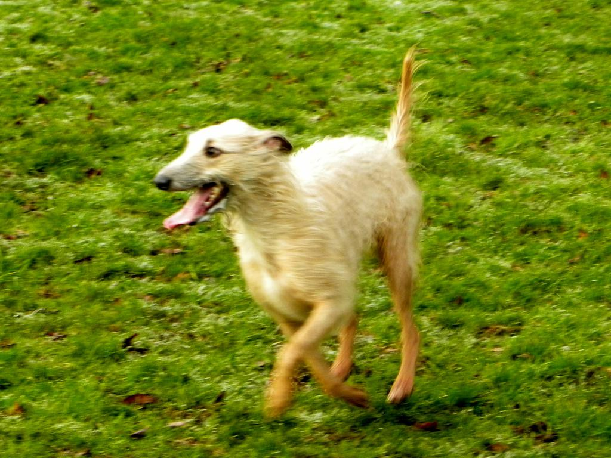
🐶 1: สุนัข (dog) 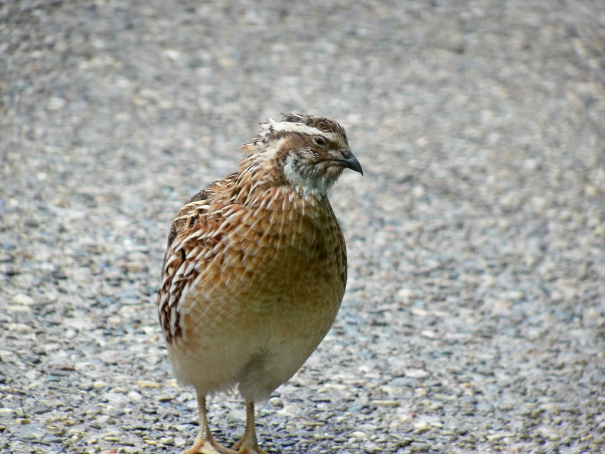
🐦 2: นก (bird) 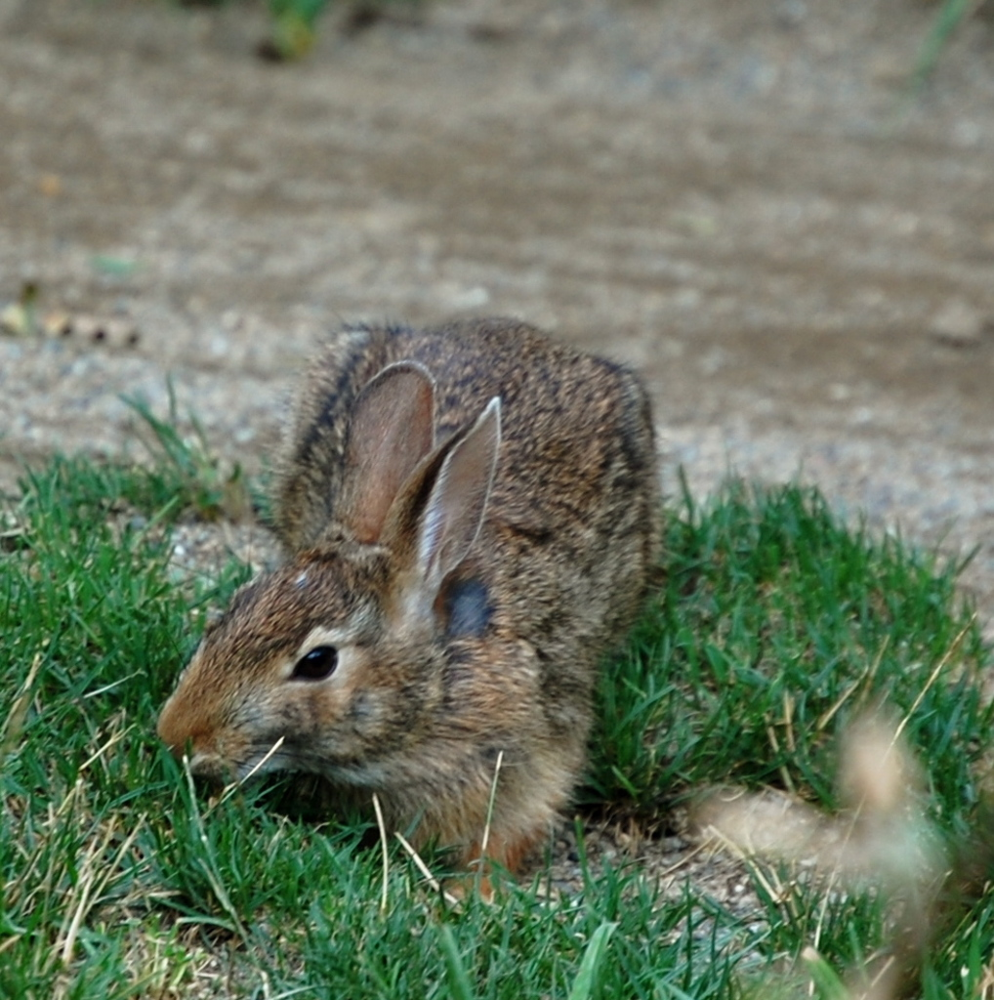
🐇 3: กระต่าย (rabbit) 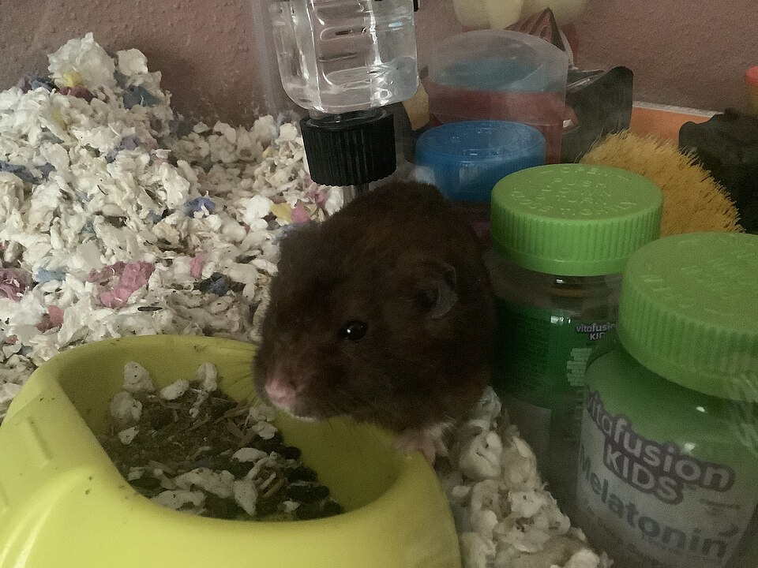
🐹 4: แฮมสเตอร์
5 ชนิด วัตถุ AI + 37 พันธุ์หมาแมว + 24 พันธุ์นก
99.54% จำแนก 5 ชนิด (ตีกรอบ mAP50 90.56%)
12 เว็บ ดึงอัตโนมัติ + 31 กลุ่ม Facebook ในระบบ
78 / 78 Unit Tests + 20 Release Checks
1. ที่มาและความสำคัญ / ปัญหา หน้า 4 / 27
จุดเริ่มต้นและปัญหาที่ต้องการแก้ไข (Problem Statement)
ปัญหาหลักที่พบในปัจจุบัน
ประกาศกระจัดกระจาย: ข้อมูลสัตว์หายกระจายอยู่หลายเพจและหลายเว็บ (JS100, FM91, พันทิป, กลุ่มสัตว์หาย–นกหาย) ต้องไล่ค้นหาทีละแหล่งผู้พบสัตว์กรอกข้อมูลลำบาก: ไม่ทราบชื่อ/สายพันธุ์ และไม่อยากกรอกแบบฟอร์มยาวๆฉากหลังรบกวนการเทียบภาพ: ภาพถ่ายมีพื้นหลัง โต๊ะ หรือข้อความป้าย ทำให้เทียบลักษณะผิดพลาด
แนวทางแก้ไขของ “Pawtal”
เริ่มต้นจากรูปภาพ 1–2 มุม: ไม่ต้องกรอกฟอร์มยาว AI ช่วยระบุชนิด + สายพันธุ์ (หมา–แมว 37 พันธุ์ / นก 24 พันธุ์) ให้อัตโนมัติตัดฉากหลังก่อนวิเคราะห์: ใช้ Object Detection ตีกรอบเฉพาะตัวสัตว์เพื่อสกัดสีขนและโครงหน้ารวมศูนย์การค้นหา: เชื่อมต่อประกาศสาธารณะ 12 เว็บไซต์ + กลุ่ม Facebook 31 กลุ่ม และจัดอันดับภาพที่คล้ายที่สุดในที่เดียว
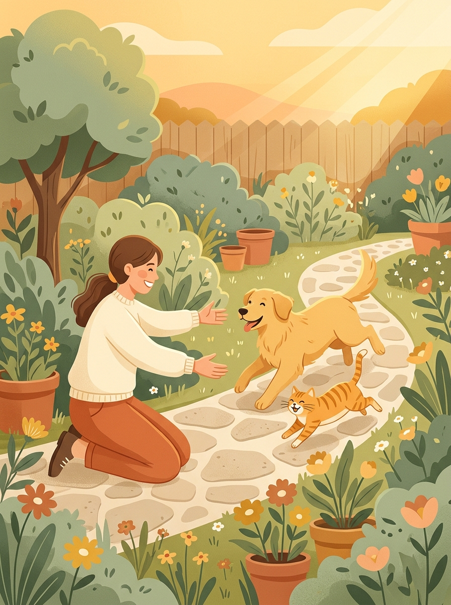
2. วัตถุประสงค์ (Objectives) หน้า 5 / 27
วัตถุประสงค์ของโครงงาน (เป้าหมายที่วัดผลได้)
1. ตรวจจับสัตว์เลี้ยง 5 ชนิด
พัฒนาและฝึกสอนโมเดล Object Detection (YOLO11n v4) ให้ตรวจจับ แมว สุนัข นก กระต่าย แฮมสเตอร์ ด้วยค่า mAP50 ≥ 85% พร้อมตรวจพื้นที่ห้าเหลี่ยม 5 มุม (IN/OUT)
2. เทียบความคล้าย & จำแนกสายพันธุ์
ผสานลักษณะเด่น 4 สัญญาณ (โครงหน้า + โปรไฟล์สายพันธุ์ + ลวดลาย + สีขน) พร้อมหัวจำแนก Residual Bottleneck MLP เพื่อจัดอันดับภาพถ่ายและสายพันธุ์ได้แม่นยำ
3. ใช้งานง่าย & รวมแหล่งประกาศ
สร้างเว็บแอปค้นหาในคลิกเดียว เชื่อมประกาศสาธารณะ 12 เว็บไซต์ + 31 กลุ่ม Facebook และบันทึกถาวรด้วย SQLite WAL (9 ตาราง) + Media Store
5 คลาส สัตว์เลี้ยงที่รองรับครบวงจร
90.56% ทำได้จริง (เป้า mAP50 > 85%)
12 เว็บ เว็บประกาศสาธารณะ + 31 กลุ่ม FB
78 / 78 Unit Tests & 20 Release Checks ผ่าน
3. ขอบเขตของโปรเจกต์ (Scope) หน้า 6 / 27
ขอบเขตการทำงานของระบบ (ทำอะไรบ้าง / ไม่ทำอะไรบ้าง)
สิ่งที่ระบบทำ (In Scope)
ชนิดสัตว์ที่รองรับ: เฉพาะ 5 ชนิด (แมว, สุนัข, นก, กระต่าย, แฮมสเตอร์)การประมวลผลภาพ: ตรวจจับตำแหน่ง, ระบุ 5 ชนิด (99.54%), แยกหมา–แมว 37 พันธุ์ (96.08%), นก 24 ชนิด (89.17% TTA) และเทียบสีขน/โครงหน้าแหล่งประกาศ & ชุมชน: ดึงอัตโนมัติจาก 12 เว็บไซต์ (เพิ่ม BirdBack & Pantip จตุจักร) + เชื่อม กลุ่ม Facebook 31 กลุ่ม จากรายชื่อช่องทางรวม 19 แหล่งพื้นที่เฝ้าระวัง: กำหนดโซนห้าเหลี่ยม 5 มุมบนภาพนิ่ง/วิดีโอ/กล้องสด เช็ก IN / OUTการจัดเก็บ: บันทึกข้อมูลและรูปภาพลง SQLite WAL (9 ตารางหลัก) + SHA-256 Media Store
สิ่งที่อยู่นอกขอบเขต (Out of Scope)
ไม่ยืนยันตัวตน 100% อัตโนมัติ: คะแนนจาก AI ใช้คัดกรองและจัดอันดับเบาะแส เจ้าของต้องตรวจสอบจุดสังเกตจริงประกอบไม่สแกนกลุ่มปิด Facebook โดยพลการ: หากไม่มี Meta Graph API Token จะไม่ล็อกอินสแกนกลุ่มปิด แต่ใช้กลุ่มสาธารณะผ่าน Pawsociety/Petio + ค้นกลุ่ม 31 กลุ่มและวางภาพ Ctrl+V แทนไม่รองรับสัตว์ป่า/สัตว์น้ำ: โมเดลฝึกสอนเฉพาะสัตว์เลี้ยง 5 ชนิด และนก 24 สายพันธุ์ตามชุดข้อมูลไม่รวม GPS Hardware Tracking: เน้นการจับคู่ภาพถ่ายเบาะแสและการเฝ้าระวังโซนจากภาพ/วิดีโอ
3.1 ที่มาของการเลือกสัตว์เลี้ยง 5 ชนิด (Why These 5 Species?) หน้า 7 / 27
ทำไมจึงเลือกสัตว์เลี้ยงทั้ง 5 ชนิดนี้มาเป็นกลุ่มตัวอย่างในโปรเจกต์?
🐱
แมว (Cat)
Class 0
สัตว์เลี้ยงยอดนิยมในเมือง หลุดออกจากบ้าน/คอนโดบ่อย และมีสีขนคล้ายกันมาก (เช่น แมวส้ม) ต้องใช้ AI ช่วยแยกโครงหน้า
🐶
สุนัข (Dog)
Class 1
มักตกใจเสียงพลุ/ฟ้าร้องจนวิ่งเตลิดหาย พบในประกาศแจ้งหาย (JS100, FM91, มูลนิธิ) มากที่สุดคู่กับแมว
🐦
นก (Bird)
Class 2
สัตว์ปีกเลี้ยง (เช่น หงส์หยก เลิฟเบิร์ด) มักบินหลุดจากกรงและตัวเล็ก จึงต้องใช้ Object Detection ตัดฉากหลัง
🐇
กระต่าย (Rabbit)
Class 3
Exotic Pet ยอดนิยมที่หลุดในสวน/หมู่บ้านบ่อย และรูปทรงในบางมุมคล้ายแมวเล็ก จึงต้องฝึก AI แยกคลาสให้ชัด
🐹
แฮมสเตอร์
Class 4 (Hamster)
ตัวแทนสัตว์ขนาดจิ๋วที่หลุดง่ายในบ้าน/หอพัก ใช้ทดสอบความสามารถการตรวจจับวัตถุขนาดเล็ก (Small Object)
แหล่งอ้างอิงเหตุผลการคัดเลือก 5 ชนิด: สุนัข & แมว (อันดับ 1–2): ข้อมูลจาก ttb analytics (ttbbank.com) & The 1 Insight ชี้ว่าแมว (~63%) และสุนัข (~31%) ครองสัดส่วนตลาดสัตว์เลี้ยงสูงสุดในไทย (ตลาดรวม ~9.2 หมื่นล้านบาท)นก กระต่าย & แฮมสเตอร์ (สัตว์เล็ก/Exotic): ข้อมูลจาก กรมพัฒนาธุรกิจการค้า (dbd.go.th) ชี้ว่าเป็นกลุ่มที่เติบโตสูง (>50%) ในกลุ่มคนเมือง/คอนโด พบแจ้งหลุดหายจริงใน JS100 / FM91 / BirdBack โดยกลุ่มนกมีสายพันธุ์เลี้ยงหลากหลายจึงพัฒนา AI แยกเฉพาะถึง 24 สายพันธุ์นก
4. ประโยชน์ที่คาดว่าจะได้รับ (Expected Benefits) หน้า 8 / 27
ประโยชน์ที่คาดว่าจะได้รับจากการพัฒนาโปรเจกต์
1. สำหรับเจ้าของสัตว์เลี้ยง
ลดเวลาค้นหา: ใช้รูปถ่าย 1–2 มุมสแกนเทียบประกาศจาก 12 เว็บไซต์ + กลุ่ม Facebook พร้อมกันในไม่กี่วินาทีเพิ่มโอกาสพบน้องกลับบ้าน: คัดกรองเบาะแสที่หน้าตา สายพันธุ์ และสีขนใกล้เคียงขึ้นมาให้ตรวจสอบได้ทันทีเตรียมข้อมูลล่วงหน้า: ลงทะเบียนโปรไฟล์สัตว์เลี้ยงไว้ใช้แจ้งหายได้ในคลิกเดียว
2. สำหรับผู้พบสัตว์ & ชุมชน
แจ้งพบได้ง่ายที่สุด: ไม่ต้องทราบสายพันธุ์หรือกรอกฟอร์มยาว แค่ส่งรูปก็ช่วยระบุพันธุ์และเทียบหาเจ้าของได้เชื่อมโยงเบาะแสเป็นระบบ: เก็บประวัติการพบเห็น แจ้งเตือน Webhook และแชร์ต่อได้สะดวกประยุกต์ใช้เฝ้าระวังพื้นที่: ตรวจจับสัตว์เข้า–ออกโซนห้าเหลี่ยมผ่านภาพ วิดีโอ และกล้องสดได้ชัดเจน
3. ด้านวิชาการและเทคโนโลยี AI
ต้นแบบ Multi-Model Fusion: ผสาน Object Detection + DINOv2 + Pet Recognition + Residual MLP + สีขนประมวลผลในเครื่องได้จริง: รันโมเดล ONNX Runtime + Residual MLP บน Node.js CPU โดยไม่ต้องพึ่ง GPU ราคาแพงต่อยอดสู่ระบบจริงได้: มีชุดข้อมูลฝึกคัดกรอง, SQLite 9 ตาราง และ Unit Tests 78 รายการพร้อมพัฒนาต่อ
5. ทฤษฎีและเทคโนโลยีที่เกี่ยวข้อง (Related Tech & AI Models) หน้า 9 / 27
ที่มาและบทบาทของโมเดล AI และอัลกอริทึมที่นำมาใช้
YOLO11n v4 + RF-DETR → pet-crop.mjs
1. models/pets5.onnx (Object Detection)
ที่มา: Fine-tune จาก YOLO11n (640×640) + จับคู่ RF-DETR Nano และ Solo Fallbackหน้าที่: ตีกรอบ 5 ชนิดใน /detect.html (mAP50 = 90.56% , mAP50-95 = 72.52%) และครอปภาพเผื่อขอบ 3% (ครอปแม่น 43/50 · IoU50 = 100%)
Meta AI DINOv2-small-q4 + Residual MLP
2. species5-v3 & bird24-v2 (384-dim)
ที่มา: dinov2-small (~16.9 MB) + หัวจำแนก Residual Bottleneck MLP หน้าที่: แยก 5 ชนิดแม่นยำ 99.54% (Blur 94.47% ) · แยกพันธุ์นก 24 ชนิดด้วย 5-Fold + Flip-TTA แม่น 89.17% (Top-3 92.08% )
open-noodle/pet-recognition-base + Residual MLP
3. oxford37-v5 Breed Head (512-dim)
ที่มา: pet-recognition-base (~348 MB) + 5-Fold Residual MLP หน้าที่: สกัดโครงหน้าหมา–แมว และจำแนก 37 สายพันธุ์ แม่นยำ 96.08% (Test 1,480) · 95.43% (Remaining 2,189)
Custom Algorithms (Sharp & Ray-Casting)
4. 2D Gaussian Coat & Ray-Casting Polygon
ที่มา: พัฒนาเองใน server.mjs, classifier-head.mjs และ detect.jsหน้าที่: สกัดสีขนกลางลำตัว (96-dim) + คำนวณจุด (cx, cy) ในเขตห้าเหลี่ยม 5 มุมบนภาพ/วิดีโอ/กล้อง
6. กรอบแนวคิด: Flowchart ขั้นตอนรับภาพและเตรียมข้อมูล หน้า 10 / 27
Flowchart 1: การรับรูปภาพ ระบุชนิดอัตโนมัติ และจัดเก็บฐานข้อมูล
เริ่มต้น (Start)
ผู้ใช้ส่งรูป 1–2 มุม
บีบอัดภาพฝั่งเว็บ
JPEG คุณภาพ 0.72 · ≤700px
(app.js · compressedImage)
ระบุชนิดสัตว์
มาด้วยหรือไม่?
ไม่ระบุ (unknown)
AI ระบุชนิดอัตโนมัติ (เบื้องหลัง)
POST /api/suggest-species
DINOv2 + species5-v3 Residual MLP (99.54%)
สแกนชนิด
สำเร็จไหม?
ไม่สำเร็จ
Fallback: identifyCaseForm
ให้ผู้ใช้ช่วยเลือกชนิดสัตว์เอง
(เฉพาะกรณีสแกนไม่สำเร็จ)
ระบุแล้ว
สำเร็จ (ได้ชนิด 1 ใน 5 คลาส)
บันทึกเคส & ซิงก์ข้อมูลถาวร
1. localStorage (โหลดเร็วฝั่งเว็บ)
2. POST /api/database → SQLite WAL
Storage Engine (storage.mjs)
• 9 ตาราง SQLite (cases, alerts, fb_groups ฯลฯ)
• แปลง Base64 → data/uploads/<sha256>.jpg
• ป้องกันเก็บไฟล์ซ้ำด้วย SHA-256 Digest
↓ ส่งต่อเข้าสู่ Flowchart 2 (จับคู่ภาพอัตโนมัติ)
6. กรอบแนวคิด (ต่อ): Flowchart การค้นหาและจับคู่ภาพอัตโนมัติ หน้า 11 / 27
Flowchart 2: การจับคู่ภาพด้วย AI 12 เว็บไซต์ & 31 กลุ่ม Facebook
เริ่มค้นหาคู่เทียบ
รัน 2 สายงานพร้อมกัน
(Promise.all Parallel)
สาย A: ตรวจจับ & ครอปภาพ
1. RF-DETR + YOLO11n v4
2. เลือกกรอบเดียว / Solo Fallback
3. ครอปตัวสัตว์ + เผื่อขอบ 3%
(pet-crop.mjs ตัดสิ่งรบกวน)
หมา / แมว
หรือไม่?
ใช่
512-dim 4-Signal Fusion
pet-base+ox37v5+DINO+Coat
(เทียบเคส & โปรไฟล์ในระบบ)
ไม่ใช่
384-dim DINOv2 (+ Bird24)
(นก 3-Signal · กระต่าย · แฮมสเตอร์)
สาย B: ดึง 12 เว็บ + 31 กลุ่ม FB
POST /api/search-all
JS100·FM91·Foundy·iFoundPet·Kwanma·Pantip
PetHub·PetFindHome·PetFF·Pawsociety·Petio·BirdBack
(แคช 10 นาที + ซิงก์โพสต์กลุ่ม Facebook)
กรอง & จัดกลุ่มชนิด
• คัดเฉพาะชนิดเดียวกัน
• ตัดเคสปิด/หาบ้านออก
• ตัดซ้ำด้วย Canonical URL
→ สกัดเวกเตอร์ทุกภาพ
รวมคะแนน & แสดงผลให้ผู้ใช้
1. คำนวณ Cosine Similarity
(ถ้าอัปโหลด 2 มุม → ใช้ Mean Score)
2. แสดง Top-5 + กลุ่ม FB ที่ใกล้เคียง
3. กดเทียบรูป 2 ฝั่ง (matchReview)
4. กด “เก็บเป็นเบาะแส” → SQLite
(ติดตามสถานะใน “เบาะแสของฉัน”)
6. กรอบแนวคิด (ต่อ): การผสานสัญญาณ AI หน้า 12 / 27
การรวม 4 สัญญาณเป็นเวกเตอร์ 512 มิติ (Feature Fusion Diagram)
ภาพตัวสัตว์ที่ครอปแล้ว
YOLO11n Crop + 3% pad
ตัดฉากหลังรบกวนออก
35% · โครงหน้าและลักษณะเด่น (pet-recognition-base)
223 มิติ (L2-normalized × √0.35) · แยกเอกลักษณ์ใบหน้าสัตว์แต่ละตัว
20% · โปรไฟล์ 37 สายพันธุ์ (oxford37-v5 · Residual MLP)
37 มิติ (L2-normalized × √0.20) · แม่นยำ 96.08% Test / 98.99% Top-3
15% · ลวดลาย & พื้นผิวขน (DINOv2-small-q4)
156 มิติ (L2-normalized × √0.15) · รองรับมุมกล้องที่ต่างกัน
30% · สีขนกลางลำตัว (2D Gaussian Coat Vector)
96 มิติ (L2-normalized × √0.30) · ป้องกันแมวส้มจับคู่ชนแมวดำ
Unified 512-dim Vector
223 + 37 + 156 + 96 = 512
เทียบ Cosine Similarity
เรียงลำดับภาพที่คล้ายที่สุดขึ้นก่อน
Multi-View & Bird 3-Signal Fusion: หากอัปโหลด 2 มุม ระบบใช้ค่าเฉลี่ย Cosine Similarity (Mean Score) · ส่วน นก ใช้เวกเตอร์ 384 มิติผสาน DINOv2 (45%) + โปรไฟล์ 24 สายพันธุ์นก bird24-v2 (25%) + สีขนลำตัว (30%)
6.1 เจาะลึกหลักการทำงานของโมเดล AI (Deep-Dive Pipeline) หน้า 13 / 27
หลักการทำงานเชิงลึกของโมเดล AI: จากภาพถ่ายสู่การจับคู่หลายสัญญาณ
ขั้นตอน 1–2: คัดกรองภาพและตัดพื้นหลัง
Image Quality Check (image-quality.mjs): ตรวจสอบความละเอียด ความสว่างเฉลี่ย และความคมชัดก่อนประมวลผล พร้อมแนะนำเมื่อภาพมืดหรือเบลอObject Detection & Crop (pet-crop.mjs): ใช้ RF-DETR Nano + YOLO11n v4 (640×640) ตีกรอบและครอปเผื่อขอบ +3% พร้อม Solo Fallback (ครอปแม่น 43/50 · IoU50 = 100%)Auto-Species Fallback (species5-v3): เมื่อผู้ใช้ไม่ระบุชนิด ระบบใช้ DINOv2-small + Residual MLP สแกนทาย 5 คลาสในเบื้องหลัง (99.54% · Blur 94.47% )
ขั้นตอน 3–4: Residual MLP & Multi-View Cosine
สุนัข / แมว (512 มิติ): ผสาน 4 สัญญาณ (โครงหน้า 35% + โปรไฟล์ 37 สายพันธุ์ oxford37-v5 20% + DINOv2 15% + สีขน 30%)นก 24 สายพันธุ์ (384 มิติ): ใช้ bird24-v2 5-Fold Residual MLP + Flip-TTA (89.17% · Top-3 92.08% ) ผสานโปรไฟล์นก 25% + DINOv2 45% + สีขน 30%Weighted Cosine & 2-Angle Average: รองรับรูป 1–2 มุมพร้อมกันด้วยการเฉลี่ยความคล้าย (Mean Similarity) โดยไม่รั่วข้อมูลข้ามชุดทดสอบ
คอมโพเนนต์ / รุ่นล่าสุด สถาปัตยกรรม / ไฟล์ มิติ / ขนาด บทบาทหลักและตัวชี้วัดจริงล่าสุด
pets5.onnx (v4) YOLO11n Fine-tuned + RF-DETR 640×640ตรวจจับ & ครอปสัตว์ 5 ชนิด (mAP50 = 90.56%, Recall 87.65%, mAP50-95 72.52%) species5-v3 & bird24-v2 DINOv2-small + Residual MLP 384-dim (~16.9 MB)จำแนก 5 ชนิด (99.54%) · แยกพันธุ์นก 24 ชนิด (89.17% TTA · Top-3 92.08%) oxford37-v5 (pet-base) pet-recognition-base + 5-Fold MLP 512-dim (~348 MB)เอกลักษณ์ใบหน้า + 37 สายพันธุ์หมา–แมว (Test 96.08% · Remaining 95.43%) 2D Gaussian Coat Custom Sharp Color Grid 96-dim (30%)ลดน้ำหนักขอบภาพ เน้นสีขน/ขนนกกลางลำตัว ป้องกันจับคู่ผิดสี
6.2 สถาปัตยกรรมเชื่อม 12 เว็บประกาศ & 31 กลุ่ม Facebook หน้า 14 / 27
การเชื่อม 12 เว็บไซต์ + 31 กลุ่ม Facebook การคัดกรอง และผลเช็กจริง
แหล่งประกาศ (12 เว็บอัตโนมัติ + กลุ่ม FB) กลไกการดึงข้อมูล ผลเช็กสด*
Pawsociety (+ดึงโพสต์กลุ่ม Facebook)Public RPC + Group Mirror (รวมกลุ่มนกหาย) 80 รายการPetFinder (PetFF) SSR & Next.js RSC (4 หน้า Lost+Found) 41 รายการKwanma (ขวัญมา) Cheerio SSR Maps (Lost + Found) 37 รายการBirdBack (tagme.love · นกหายเฉพาะทาง)HTML Scraper + กรองเคสปิด & ลิงก์รูปแท้ 31 รายการiFoundPet · FM91 · JS100 · Pantip จตุจักร Web/News & Forum Scraper + Isolated Timeout 55 รายการ (24+13+9+9)Petio · PetFindHome · Foundy · PetHub + 31 กลุ่ม FB ซิงก์รายชื่อกลุ่ม + ค้นกลุ่มด้วย AI + วางรูป Ctrl+V 31 กลุ่ม FB ในระบบ
ระบบคัดกรองและเชื่อมกลุ่มชุมชน
กรองเฉพาะเคสที่ยังเปิดอยู่: ตัดประกาศ “กลับบ้านแล้ว / พบเจ้าของแล้ว / หาบ้าน / กระทู้ถามทั่วไป / [AI]” ออกอัตโนมัติกลุ่ม Facebook 31 กลุ่มในระบบ: ดึงโพสต์สาธารณะอัตโนมัติผ่าน Pawsociety/Petio + มีส่วนแสดง กลุ่ม Facebook ที่คล้าย ท้ายผลค้นหา พร้อมปุ่มค้นหาตรงกลุ่มและ Ctrl+V วางภาพเข้า AICache & Concurrency: แคชประกาศ 10 นาที ตัดซ้ำด้วย Canonical URL และแยก Error อิสระต่อเว็บ
* ตรวจวัดจาก check-release.mjs --online ล่าสุด รวม 244 ประกาศสด จากเว็บที่ตอบกลับ + 31 กลุ่ม FB (Foundy/PetHub อาจ timeout บางจังหวะ)
6.3 สถาปัตยกรรมฐานข้อมูลถาวร & ที่เก็บรูปภาพ (SQLite WAL + SHA-256) หน้า 15 / 27
การออกแบบฐานข้อมูล SQLite โหมด WAL และ Media Storage แยกไฟล์ภาพ
ฐานข้อมูลเชิงสัมพันธ์ (data/tamnong.sqlite)
ใช้ node:sqlite เปิดโหมด WAL (Write-Ahead Logging) และ PRAGMA foreign_keys = ON แบ่งโครงสร้าง 9 ตารางหลัก :
cases & sightings:case_idprofiles:images_json)alerts & alert_notifications:facebook_groups:embedding_cache, activity_logs, app_meta:
Content-Addressable Media Store (data/uploads/)
แยกรูปออกจากตารางฐานข้อมูล: แปลง Base64 เป็นไฟล์จริงใน data/uploads/ เก็บเพียง URL พาธใน SQLite เพื่อให้ฐานข้อมูลเบาและค้นหาเร็วป้องกันเก็บภาพซ้ำด้วย SHA-256: ตั้งชื่อไฟล์จากแฮชเนื้อหาภาพ (<hash>.jpg/.png) รูปเดิมไม่บันทึกซ้ำซิงก์ 2 ฝั่ง & สำรองข้อมูล: หน้าเว็บแคชผ่าน localStorage เพื่อเปิดเร็ว และซิงก์กับเซิร์ฟเวอร์ผ่าน /api/database พร้อมรองรับ Export/Import JSON & CSV
7. การเทรนโมเดล AI (Google Colab & Data Augmentation) หน้า 16 / 27
การเทรนโมเดล AI บน Google Colab, Dataset และ Data Augmentation
ขั้นตอนเตรียม Dataset & Train บน Google Colab
Dataset & การกำหนด Label (5 คลาส): ใช้ชุดข้อมูลแยก Train / Val / Test อิสระ (0: cat, 1: dog, 2: bird, 3: rabbit, 4: hamster) — Detector v4 (508 Train / 75 Val / 75 Test), Oxford-37 และ Bird24 (2,520 ภาพ)Train บน Google Colab: รันผ่านไฟล์ ดาวน์โหลด Notebook สำหรับเปิดใน Colab ด้วย GPU บน Colab เทรนโมเดล YOLO11n (ขนาดภาพ 640×640) แล้วส่งออกเป็นไฟล์ models/pets5.onnxData Augmentation: ใช้เทคนิค Mosaic, HSV Color Jitter, Horizontal Flip และ Scale/Crop เพื่อเพิ่มความแม่นยำเมื่อเจอสภาพแสงและมุมกล้องจริงอัปเกรด & ทดสอบระบบ: หัวจำแนก Residual Bottleneck MLP + รัน 84/84 Unit Tests & 22/22 Release Checks ผ่านครบ (0 Errors)
Dataset & Labels: การกระจายตัวของกรอบ Bounding Box ทั้ง 5 คลาส
Data Augmentation: ภาพจริงระหว่าง Train (Mosaic & HSV Color)
8. ผลการดำเนินงาน: ผลเทรนและความแม่นยำทุกระบบ หน้า 17 / 27
ผลวัดประสิทธิภาพโมเดล AI ล่าสุด (Detector 5 ชนิด & Classifiers ทั้ง 3 หัว)
ชนิดสัตว์ (Detector v4) mAP50 Recall 5-Class MLP
0: แมว 93.67% 88.30% 99.54% Species5 v3 Test 1: สุนัข 91.76% 83.28% 2: นก 90.38% 86.67% 3: กระต่าย 84.78% 86.67% 4: แฮมสเตอร์ 92.18% 93.33% เฉลี่ย 5 ชนิด 90.56% 87.65% mAP50-95: 72.52%
ผลแยกสายพันธุ์ล่าสุด (Residual MLP):
หมา–แมว 37 พันธุ์ (oxford37-v5): 96.08% Test (Top-3 98.99%) · นก 24 พันธุ์ (bird24-v2): 89.17% TTA (เพิ่มจาก 82.50%, Top-3 92.08%) · ครอปภาพอัตโนมัติ: 43/50 (IoU50 = 100%)
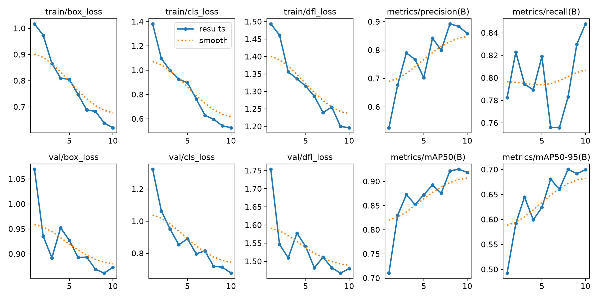
Training Curves YOLO11n v4 (Loss ลดลงต่อเนื่อง, mAP50 สูงและเสถียร)
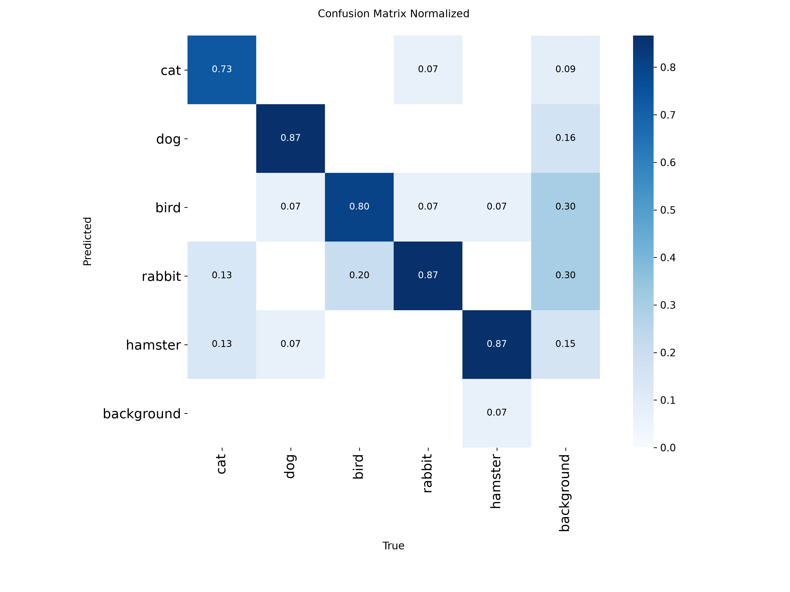
Normalized Confusion Matrix ทั้ง 5 คลาส
Pawtal หน้า 18 / 27
เมื่อค้นจากภาพ ระบบพาสัตว์ตัวเดิมขึ้นมาได้บ่อยแค่ไหน สุนัข · MPDD ภาพปกติพบตัวเดิมในอันดับแรก 36/36 ภาพ เมื่อทำภาพเบลอพบ 34/36 ภาพ
แมว · HSC ภาพเดี่ยวข้ามมุมกล้องพบตัวเดิมใน 5 อันดับแรก 47.66% จึงควรให้เจ้าของเทียบจุดสังเกตอีกครั้ง
ค้นด้วยภาพแมว 2 มุม พบตัวเดิมใน 5 อันดับแรก 31/32 กรณี เมื่อใช้ชุดภาพผู้สมัครคงที่ ผลนี้มาจากการทดลองคนละชุดกับภาพเดี่ยว
99.54% วัดการจำแนกชนิดสัตว์ ส่วน mAP50 90.56% วัดการตีกรอบตรวจจับ การค้นหาสัตว์ตัวเดิมต้องวัดอันดับของตัวที่ถูกต้องแยกต่างหาก
ที่มา รายงานผลโครงการ release/HANDOFF_TH.md
8.1 ผลการพัฒนาโมเดล: เปรียบเทียบก่อน–หลัง (Before → After) หน้า 19 / 27
พัฒนาการความแม่นยำ AI ทั้ง 4 ระบบหลังอัปเกรดเป็น Residual MLP & ขยายข้อมูล
ระบบ AI (รุ่นโมเดล) เดิม (Baseline / Linear) ล่าสุด (อัปเกรดแล้ว) ผลที่วัดได้จริงบน Test Set
1. สายพันธุ์นก 24 ชนิด bird24-v1 → v2 (DINOv2)Linear บน 792 ภาพ82.50% ขยาย 2,520 ภาพ + 5-Fold Residual MLP + Flip-TTA 89.17% TTA (+6.67% )92.08% · Loss ↓45%2. สายพันธุ์หมา–แมว 37 พันธุ์ oxford37-v4 → v5 (pet-base)Linear Head v495.54% 5-Fold Residual Bottleneck MLP (h=128) 96.08% Test (1,422/1,480)95.43% (↑)3. จำแนก 5 ชนิดสัตว์เลี้ยง species5-v2 → v3 (DINOv2)Linear Head v299.08% · Blur: 94.01% Residual MLP (h=256) + Noise & Mixup99.54% Test (216/217)94.47% · Top-3: 100% 4. ครอปตัวสัตว์อัตโนมัติ pet-crop.mjs (v4 + RF-DETR)Threshold ตายตัว 0.6541 / 50 ภาพ เพิ่ม Solo Unambiguous Fallback (0.48+ เมื่อมี 1 ตัวชัด) 43 / 50 ภาพ (IoU50 = 100% )
ทำไม Residual Bottleneck MLP ถึงชนะ Linear เดิม?
เพิ่มชั้นซ่อน (Linear → LayerNorm → GELU → Linear) บวกเส้นลัด Skip Linear ทำให้แยกเส้นแบ่งที่ไม่เป็นเชิงเส้นได้ดีขึ้น เช่น นกค็อกคาเทล/เลิฟเบิร์ดที่มีสีใกล้กัน หรือภาพเบลอโดยไม่เสียเสถียรภาพ
หลักการคัดเลือกแบบ Zero Test Leakage
ทุกโมเดลคัดเลือกด้วย Validation / 5-Fold Out-of-Fold (OOF) เท่านั้น ไม่นำชุด Test มาจูนพารามิเตอร์ และยืนยันผล Parity ตรงกับ PyTorch ↔ Node.js (maxDiff < 10⁻⁶) ทุกตัวก่อนเปิดใช้งานจริง
8. ผลการดำเนินงาน: ตัวอย่างขั้นตอนการใช้งานจริง (Live Screenshot Flow) หน้า 20 / 27
ลำดับขั้นตอนการใช้งานจริง: ตั้งแต่ส่งรูปจนเจอประกาศที่คล้ายกัน (4 ขั้น)
ขั้นที่ 1 เข้าหน้าแรก Pawtal
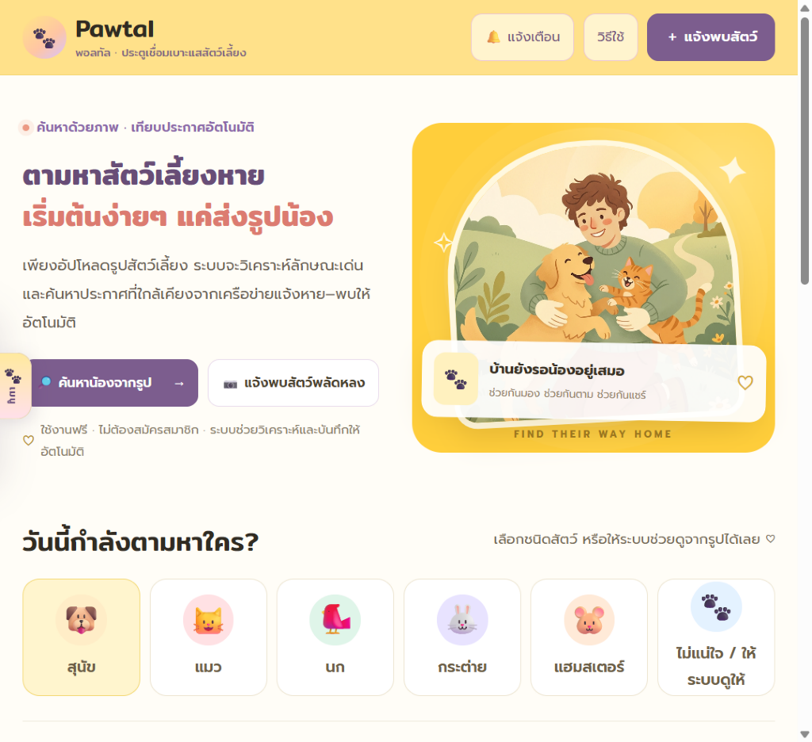
หน้าเว็บสะอาดตา กด “🔎 ค้นหาน้องจากรูป” หรือเปิด 31 กลุ่ม FB จากแถบเมนูลัดด้านซ้าย
ขั้นที่ 2 ส่งรูปน้อง 1–2 มุม
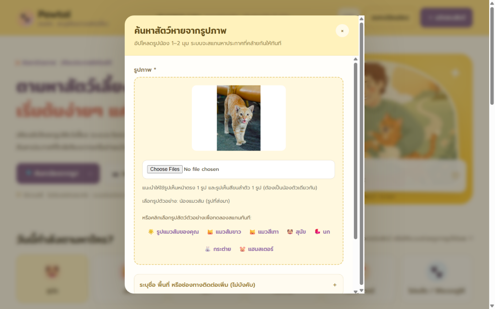
อัปโหลดรูป (เช่น แมวส้ม ) ไม่ต้องกรอกข้อมูลยาว แล้วกดสแกนค้นหาทันที
ขั้นที่ 3 AI จัดอันดับประกาศ
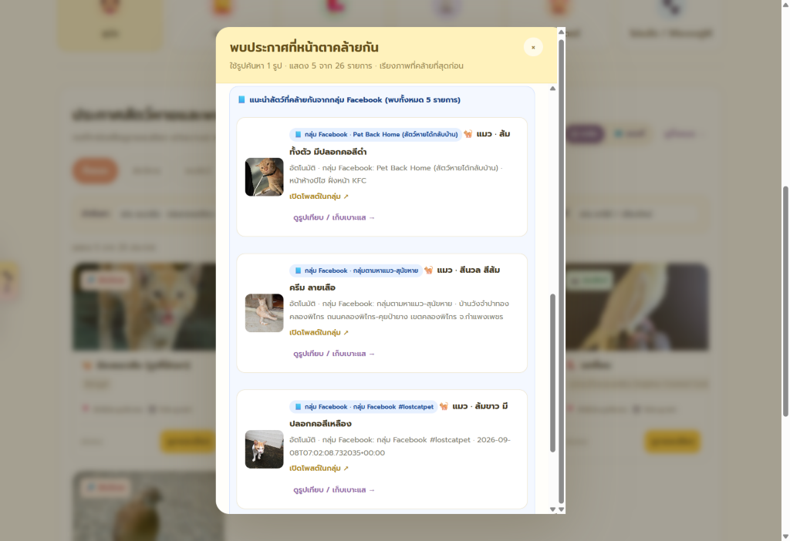
AI ระบุชนิด–สายพันธุ์เบื้องหลัง + เทียบประกาศจาก 12 เว็บ & กลุ่ม Facebook เรียงความคล้ายให้ทันที
ขั้นที่ 4 เทียบ 2 ฝั่ง & เก็บเบาะแส
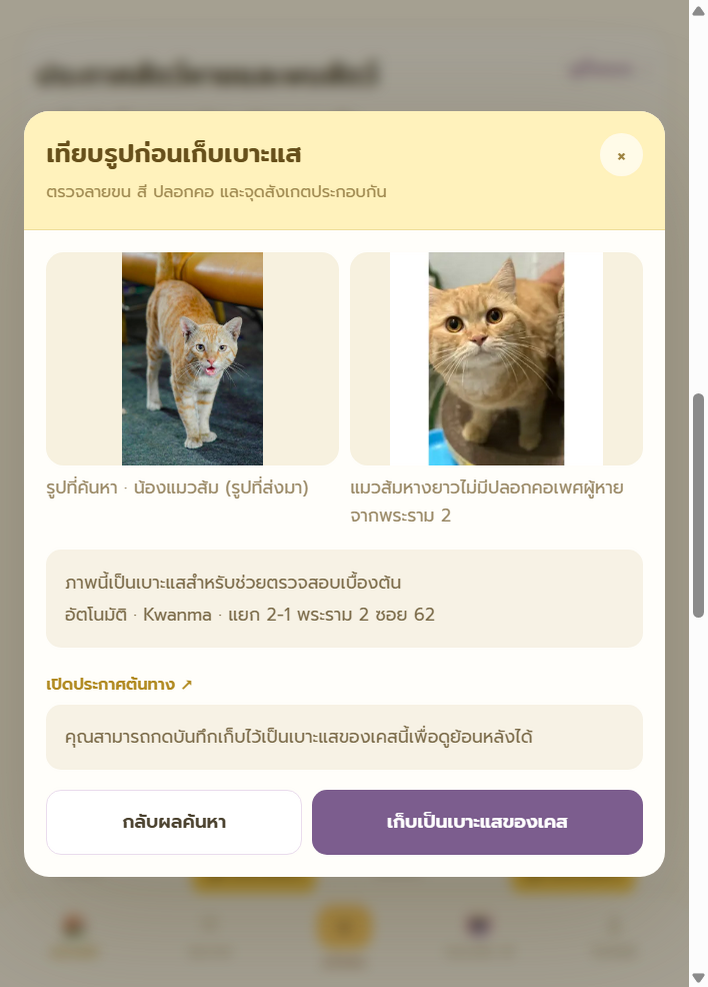
เปิดดูรูปคู่เทียบซ้าย–ขวา ลิงก์โพสต์ต้นทาง และกด “เก็บเป็นเบาะแสของเคส” ลง SQLite
8. ผลการดำเนินงาน (ต่อ): ชิ้นงานและการสาธิต หน้า 21 / 27
ห้องตรวจจับ AI 5 ชนิดโฉมใหม่ และระบบพื้นที่เฝ้าระวัง 5 มุม (Pentagon Zone)
หน้าสาธิตจริง (/detect.html · แยกแท็บใช้งาน/สอน AI)
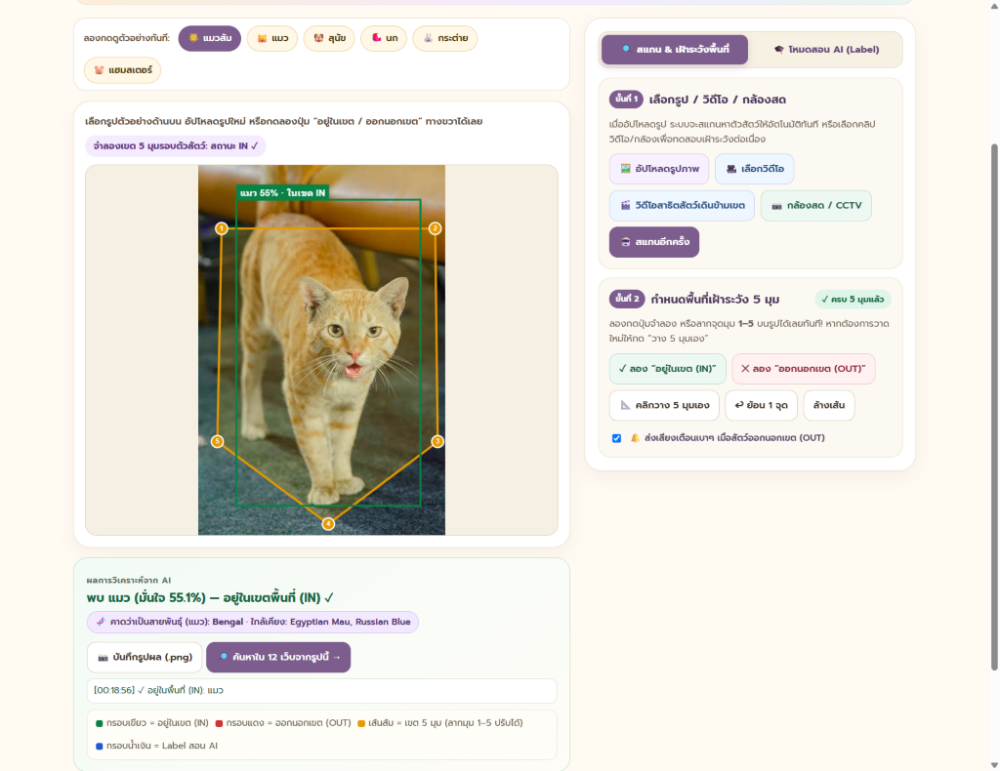
พื้นที่ห้าเหลี่ยม 5 มุม (/detect.html)
P1
P2
P3
P4
P5
แมว 55.1% · IN
Ray-Casting
dog · OUT
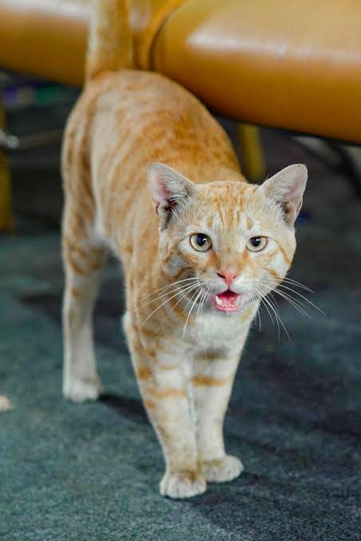
ผลทดสอบจริงกับภาพแมวส้ม (user-cat.jpg) & ความสามารถล่าสุด
ตรวจพบ แมว (55.4%) สถานะ IN + ทายสายพันธุ์ (Bengal / Egyptian Mau / Russian Blue) + 🎨 สี/ลายขน (สีส้ม / ลายสลิด) · เชื่อมปุ่มค้นหา 12 เว็บ, กล้องสด/วิดีโอ, แผนที่, OCR, LINE Bot และผ่าน Unit Tests 78/78 + Release Check 20/20
เปิดสาธิต AI →
ลำดับเดโม เปิดห้องตรวจจับ ทดลองภาพแมว สุนัข นก กระต่าย และแฮมสเตอร์ทีละภาพ ให้เห็นกรอบและชื่อที่โมเดลทำนาย จากนั้นใช้ภาพเดิมและขยับโซนให้จุดกลางกรอบอยู่ด้านในและด้านนอกเพื่อเทียบผล IN / OUT ·
เปิดห้องตรวจจับ
8.1 ยกระดับสู่ Production · OCR · LINE Bot & Mobile UX หน้า 22 / 27
ฟีเจอร์พร้อมใช้งานจริง: โปสเตอร์ QR, ซูมปักหมุด, Hybrid, OCR, PWA & LINE Bot
Auto-Poster QR (1080×1350 · ISO v3)
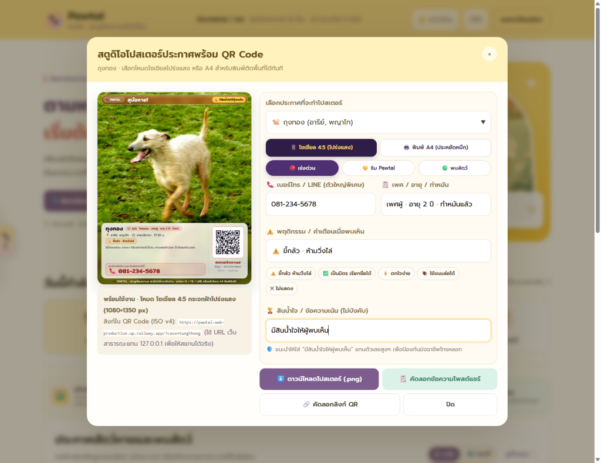
สร้างโปสเตอร์พร้อม QR Code แท้ (Pure-JS Reed-Solomon) สแกนแล้วเด้งเข้า /?case=<id> เพื่อแจ้งเบาะแสได้ทันที
Side-by-Side Zoom (1x–3x) & Landmark Pinning
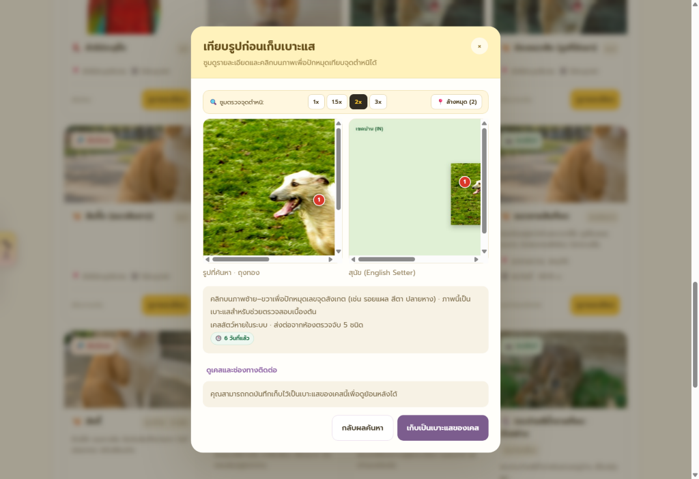
ซูมเทียบแผลเป็น สีตา ปลอกคอ ซ้าย–ขวา พร้อมปักหมุดเลขจุดสังเกตและป้าย Hybrid ระยะทาง–เวลา
AI & Search Intelligence
• Hybrid Re-ranking: ภาพ + ระยะทาง Haversine + เวลาCoat Tagging: ส้ม-ขาว / สามสี / ทักซิโด้ / ลายสลิดOCR (Tesseract): ดึงเบอร์โทร–LINE–พื้นที่จากภาพ
Mobile UX & Community
• PWA: ติดตั้งลงมือถือได้ (manifest.json + sw.js)กล้องมือถือทันที: ปุ่ม capture="environment"LINE Bot Webhook: /api/line/webhook + Flex Card
Security & Operations
• Owner PIN 4–6 หลัก: แฮช scrypt กันลบ/แก้เคสRate Limiter + Magic Bytes: กันยิงซ้ำ & ไฟล์ปลอมBackground Worker: อุ่นแคช 12 เว็บทุก 20 นาที
9. สรุปผล และข้อจำกัด (Conclusion & Limitations) หน้า 23 / 27
สรุปผลการบรรลุวัตถุประสงค์และข้อจำกัดของระบบ
สรุปผลการบรรลุวัตถุประสงค์
ตรวจจับ & จำแนกแม่นยำขึ้นทั้งหมด: Detector mAP50 = 90.56% · 5 ชนิด 99.54% · หมา–แมว 37 พันธุ์ 96.08% · นก 24 พันธุ์ 89.17% TTA + จำแนกสี/ลายขนพันธุ์ผสม + OCR อ่านเบอร์โทรค้นหาแบบ Hybrid & UX ใช้งานง่าย: ผสานภาพ + ระยะทาง Haversine + เวลา, สร้างโปสเตอร์ QR, ซูมปักหมุด 1x–3x, PWA กล้องมือถือ และ LINE Bot Webhook พร้อมต่อ Tokenความปลอดภัย & ผ่าน QA เต็มระบบ: เชื่อม 12 เว็บ + 31 กลุ่ม FB + SQLite 9 ตาราง + Owner PIN + Rate Limit + Magic Bytes + Background Worker + ผ่าน Unit Tests 78/78 และ Release Check 20/20
ข้อจำกัดที่พบ (Limitations)
สิทธิ์ API ภายนอก (Meta & LINE OA): ระบบสร้าง Webhook ของ LINE และตัวเชื่อม Facebook ไว้ครบแล้ว แต่การเปิดใช้งานจริงฝั่งกลุ่มปิด FB และบอท LINE ต้องใส่ Token/อนุมัติจากผู้ให้บริการภายนอกการยืนยันตัวตนรายตัว: คะแนนจาก AI ใช้คัดกรองเบาะแสและจำแนกพันธุ์เบื้องต้น ยังต้องอาศัยเจ้าของตรวจสอบจุดสังเกตจริง (ผ่านเครื่องมือ Zoom & Pin) ประกอบคุณภาพและมุมภาพ: ภาพมืดจัด เบลอหนัก หรือข้อความป้ายชื่อเล็กมากอาจลดความแม่นยำของ Detector และ OCR
9.1 แหล่งอ้างอิงและที่มาข้อมูล (References & Sources) หน้า 24 / 27
แหล่งอ้างอิงโมเดล AI ชุดข้อมูล และเว็บไซต์ประกาศสาธารณะ
โมเดล AI ชุดข้อมูล และอ้างอิงสถิติ (Models & Datasets)
Ultralytics YOLO11n & RF-DETR: docs.ultralytics.com/models/yolo11 · huggingface.co/open-noodleMeta AI DINOv2-small-q4: huggingface.co/onnx-community/dinov2-smallOxford-IIIT Pet (37 พันธุ์) & OpenImages5: robots.ox.ac.uk/~vgg/data/petsiNaturalist Bird24 (2,520 ภาพ 24 สายพันธุ์): api.inaturalist.org (สังเกตการณ์นกระดับวิจัย & นกเลี้ยงในไทย)แหล่งอ้างอิงเหตุผล 5 ชนิดสัตว์: ttb analytics (ttbbank.com), The 1 Insight , และ กรมพัฒนาธุรกิจการค้า (dbd.go.th)
แหล่งประกาศสาธารณะ 12 เว็บไซต์ & เครื่องมือ
JS100 & FM91: js100.com/en/site/lost_found · fm91bkk.com/lostandfoundFoundy & iFoundPet: foundy.pet · ifoundpet.comKwanma, PetHub & PetFindHome: kwanma.com · pethubthai.com · petfindhome.comPetFinder, Pawsociety, Petio, BirdBack & Pantip: petff.in.th · pawsociety.pet · petio.care · tagme.love · pantip.com/forum/jatujakRuntime & ML: Node.js, PyTorch CPU, onnxruntime-node, tesseract.js, node:sqlite, sharp, cheerio
10. ข้อเสนอแนะและแผนพัฒนาต่อ (Future Work) หน้า 25 / 27
สิ่งที่พัฒนาแล้วในระบบ & แนวทางขยายสู่การใช้งานสาธารณะ
✓ พัฒนาและทดสอบแล้วครบในระบบ
Residual MLP ครบ 4 โมเดล, Hybrid Haversine + Recency, Coat Tagging, OCR (Tesseract) , Auto-Poster QR , Zoom & Pin, PWA, Owner PIN, Rate Limit/Magic Bytes, Background Worker และ LINE Bot Webhook
เปิดใช้งานจริง: LINE OA & Cloud HTTPS
ใส่ LINE_CHANNEL_SECRET / LINE_CHANNEL_ACCESS_TOKEN บนเซิร์ฟเวอร์ HTTPS เพื่อเปิดรับรูปและตอบ Flex Card ใน LINE Official Account รวมถึงติดตั้ง PWA และสแกน QR ข้ามอุปกรณ์ได้จริง
ขยายข้อมูลภาคสนาม & Meta App Review
สะสมชุดภาพจับคู่รายตัวภาคสนาม (สัตว์พันธุ์ผสมไทย/ภาพกลางคืน 100+ เคสอิสระ) เพื่อเทรน Re-ID และยื่น Meta App Review เพื่ออ่านโพสต์กลุ่ม Facebook โดยตรง
สไลด์จบ · ช่วงถาม–ตอบ (Q & A) หน้า 26 / 27
🐾
ขอบคุณคณะกรรมการและผู้ฟังทุกท่าน
Q & A · เปิดโอกาสให้ซักถามและสาธิตระบบจริง
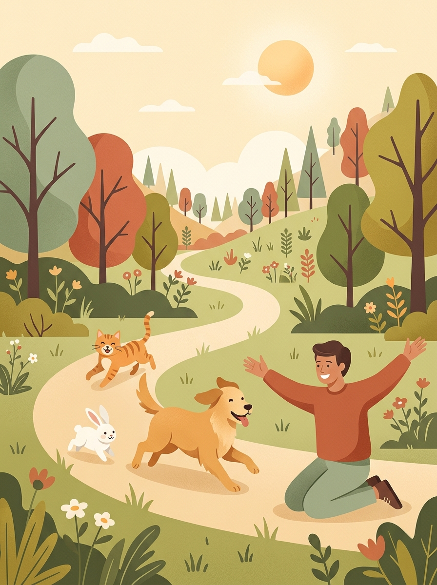
Pawtal หน้า 27 / 27
ผลงานประกอบการสอบ เปิดภาพ System Diagram · เปิดเดโมตรวจจับ
ลิงก์สำหรับผู้สอน Canva · รอลิงก์สไลด์ Pawtal